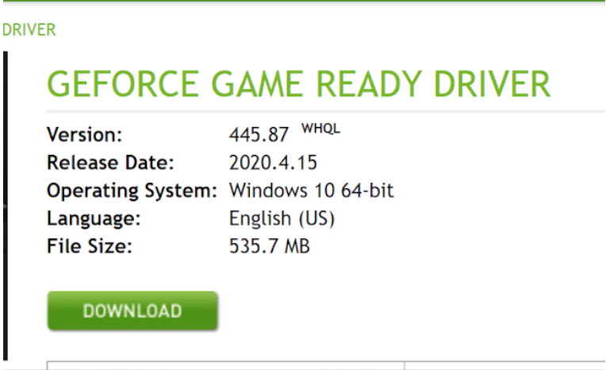
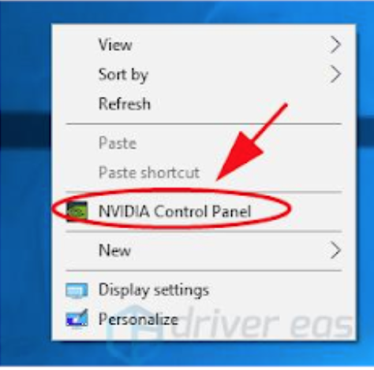
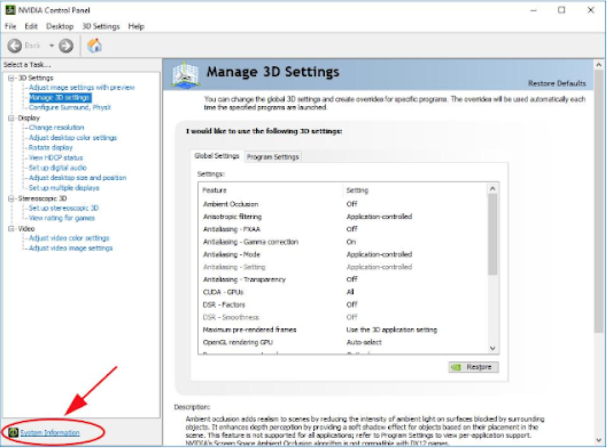

Guide to DeepLabCut installation on Windows 10
1. Nvidia Driver installation
First off you should check the properties of your gpu. On a Windows 10 computer, one way to find out is by right-clicking on the desktop area and choosing Display Settings. In the Display Settings box, select Advanced Display Settings and then choose the Display Adapter properties option. On the Adapter tab in the box, you should see the brand of the graphics card and its memory amount listed. You can also get to the same Properties box from the Windows 10 Start menu — select Settings, then System to get to Advanced Display Settings, and then Display Adapter Properties:
Here you input the properties of your GPU and it tells you the nvidia version you should install:
For example: Here a GeForce GTX 1070 is listed. The latest version available is 445.87. The driver is backwards compatible so the latest version works fine with earlier versions of CUDA.
{kind=link}
{kind=link}
Now check which Nvidia version is already installed: Right click on desktop and choose Nvidia control panel:
 {kind=link}
{kind=link}
Then click on system information
Find out the version under Display Tab - Details:
2. CUDA Toolkit installation
In order to get a package working you need a hierarchy of compatible versions installed. Now the compatibility tree as follows:
Tensorflow version has to be compatible with CUDA Toolkit’s version.
CUDA Toolkit version has to be compatible with Nvidia driver version.
Nvidia driver version has to be compatible with your gpu.
So it’s best to install the latest version of Nvidia compatible with your gpu and then see what Cuda versions you’re left with. The compatibilities are reported here:
See https://docs.nvidia.com/deploy/cuda-compatibility/index.html for more info.
Once you’ve decided on the CUDA Toolkit version, you go to the CUDA archive and download. But before proceeding with CUDA installation, CUDA Toolkit requires Visual Studio as a prerequisite. So, check if you have the right version of the VS compatible with your chosen version of CUDA Toolkit installed. In case your package is developed for a exclusive versions of CUDA toolkit you should take that into account while choosing the version. For example, in the case of Deeplabcut, there are only a few versions that are pre-tested to work for this package:
“In the Nature Neuroscience paper, we used TensorFlow 1.0 with CUDA (Cuda 8.0); in the Nature Protocols paper, we tested up through TensorFlow 1.14 with CUDA 10. Some other versions of TensorFlow have been tested (i.e. these versions have been tested 1.2, 1.4, 1.8 and 1.10-1.14, but might require different CUDA versions - CUDA 10.1+ is NOT supported)! Currently, TensorFlow 2.0 is not supported. Please check your driver/cuDNN/CUDA/TensorFlow versions” 1
2.1 Visual Studio installation
Visual studio is required for the installation of Nvidia CUDA Toolkit . If you attempt to download and install CUDA Toolkit for Windows without having first installed Visual Studio, you get the message shown:
At the time of writing, the Visual Studio Express Community Version 2017 is compatible with CUDA 10 version. However the latest version is 2019. You can get previous versions of Visual Studio for free by joining “Visual Studio Dev Essentials” and then searching for the version of Visual Studio you want.
Once you have downloaded Visual Studio Express, its installation is straightforward. During installation, Visual Studio prompts you to as whether you ‘want to continue without workloads’. I pressed ‘continue’ here, as I had no intention of using workloads at all. A PC reboot after installation of Visual Studio May be Required.
2.2 CUDA installation
After installing Visual Studio, move straight on to downloading and attempting to install CUDA Toolkit for Windows.You might get a message that Visual Studio was still operating and was preventing the installation of CUDA Toolkit. Rebooting your PC before attempting to install CUDA Toolkit again will solve this problem.
After installation you should add the path to the environment variables. Right-clicking on my Computer, going to the ‘Advanced system settings` page, then environment variables. Click on path, if the path to your CUDA version is not there, you should add it. For example here CUDA 9.0 was already there and the path for CUDA 10.0 was added at the bottom.
3. cuDNN installation
After finishing the CUDA Toolkit installation you have to install cuDNN on Windows 10 which is compatible with CUDA version. The table below shows the compatibolities for Linux operating system as an example:
The writers of the Deeplabcut package say that in case you download the conda environment for this package there is no need to separately install cuDNN. However I had to separately install it in Ubuntu despite using the aforementioned environment. Either way we cover it here in case you are not using the Anaconda distribution.
The NVIDIA CUDA Deep Neural Network library (cuDNN) is a GPU-accelerated library of primitives for deep neural networks. cuDNN provides highly tuned implementations for standard routines such as forward and backward convolution, pooling, normalization, and activation layers. cuDNN is part of the NVIDIA Deep Learning SDK. cuDNN download link : https://developer.nvidia.com/cudnn.
You have to create an account in order to download this. Then you will get to choose the version as shown below:
After downloading the installation file. You should unzip it and copy a few files as instructed below.
There are three files in the unzipped cuDNN folder subdirectories which are to be copied into the CUDA Toolkit directories. These are cudnn64_7.dll, cudnn.h and cudnn.lib:
cudnn64_7.dll
cudnn64_7.dllcan be found in the following path within the downloaded cuDNN files:<downloadpath>\cudnn-9.0-windows10-x64-v7.5.0.56\cuda\bin\cudnn64_7.dllAssuming that you installed CUDA 9.0 (version 9.0 here is an example) to its default path, namely the following default path::
C:\Program Files\NVIDA GPU Computing Toolkit\CUDA\v9.0you can copy the
cudnn64_7.dllfile directly into the CUDA folder’s bin folder path:C:\Program Files\NVIDIA GPU Computing Toolkit\CUDA\v9.0\bin\Note
you don’t need to create any new subfolders.
cudnn.h
As with the
cudnn64_7.dllfile above, after downloading and unzipping the cuDNN folder, the header filecudnn64.hcan be found in the path:<downloadpath>\cudnn-9.0-windows10-x64-v7.5.0.56\cuda\ include\cudnn.hAgain, assuming that you installed CUDA 9.0 into the default path, copy
cudnn.hdirectly into the CUDA folder with the following path (no new subfolders are necessary):C:\Program Files\NVIDIA GPU Computing Toolkit\CUDA\v9.0\include\cudnn.lib
The file
cudnn.libcan be found in the downloaded cuDNN path:<downloadpath>\cudnn-9.0-windows10-x64-v7.5.0.56\cuda\lib\x64\cudnn.libCopy
cudnn.libdirectly into the CUDA folder with the following path:C:\Program Files\NVIDIA GPU Computing Toolkit\CUDA\v9.0\lib\x64\
4. Tensorflow installation
You can download the deeplabcut conda environment as mentioned earlier if you have anaconda installed or want to install it through this link which has all the necessary packages in itself and you can skip the points below and proceed with your projects.
4.1 Create virtual environment
However, if you want your own customized env, create a virtual environment and install tensorflow-gpu inside the virtual env. Enter these commands in cmd (run as administrator) Needless to say that you should already have Python 3 and pip installed:
pip install virtualenv
cd my_project
virtualenv env # (env is supposed to be the name of your environment)
4.2 activate the environment
Then activate your env with the command below (replace the pathtowith the path to your env folder):
\pathto\env\Scripts\activate
4.3 install Tensorflow
Now you should install tensorflow:
pip install tensorflow-gpu==1.12 #(or any version you see fit)
4.4 check Tensorflow installation
Then to check if your gpu is being occupied run this in an ipython console:
import tensorflow as tf
sess = tf.Session(config=tf.ConfigProto(log_device_placement=True))
Look for a result like this:
Device mapping:
/job:localhost/replica:0/task:0/device:GPU:0 -> device: 0, name: GeForce GTX 1070, pci bus id: 0000:01:00.0, compute capability: 6.1
Which shows your gpu has been correctly recognized.
Or if you want to be more thorough assign a calculation to it:
import tensorflow as tf with tf.device('/gpu:0'): a = tf.constant([1.0, 2.0, 3.0, 4.0, 5.0, 6.0], shape=[2, 3], name='a') b = tf.constant([1.0, 2.0, 3.0, 4.0, 5.0, 6.0], shape=[3, 2], name='b') c = tf.matmul(a, b) with tf.Session() as sess: print (sess.run(c))
If you have a gpu and can use it, you will see the result. Otherwise you will see an error with a long stacktrace. In the end you will have something like this:
Cannot assign a device to node 'MatMul': Could not satisfy explicit device specification '/device:GPU:0' because no devices matching that specification are registered in this process
5. Deeplabcut and wxpython installation
Then when you are assured of your installations. You need to install only deeplabcut and wxpython into your env. Make sure you install the right version of wxpython. At the time of writing version 4.1 doesn’t work but version 4.0.7 does:
pip install -U wxPython==4.0.7.post2
After installation import deeplabcut in ipython to make sure it is installed properly:
import deeplabcut
If you don’t have conda installed, it’s best to install jupyter notebook inside this env to be able to use the pre-written notebooks for this package:
pip install jupyter
See also
Take a look at the github page for Deeplabcut for further information: https://github.com/DeepLabCut/DeepLabCut/blob/master/docs/installation.md
The link below has the complete instructions for installation of tensorflow with CUDA and cuDNN however the link directs to the latest release of Cuda. Bearing that in mind, scroll through if points are not cleared up here.
If you encounter problems with gcc: Run the following command in cmd to see which version is installed if any:
gcc -v
If not, follow instructions here to install:
https://preshing.com/20141108/how-to-install-the-latest-gcc-on-windows/